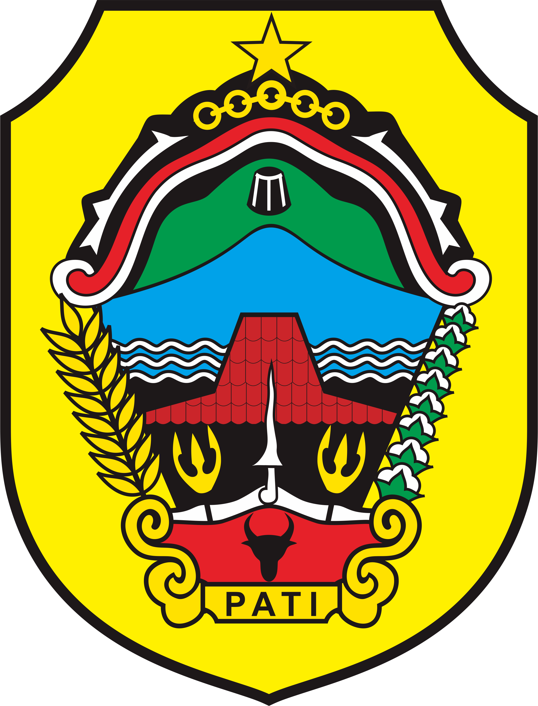

Halo!
Hai,Selamat datang di situs pemerintahan PATI BUMI MINA TANI,silahkan jelajahi segala informasi yang ada di kota PATI.
Arti Lambang Kota Pati

Lambang Daerah Kabupaten Pati yang sudah disahkan dalam Peraturan Daerah No. 1 Tahun 1971 yaitu Gambar yang berupa: "keris rambut pinutung dan kuluk kanigara".
Arti Lambang Daerah Kabupaten Pati :
1)Bentuk lambang daerah Kab.Pati berbentuk perisai, bermakna pertahanan dan perlindungan.
2)Sebuah bintang bersudut lima berwarna kuning melambangkan hasrat masyrakat Kab. Pati untuk mengamalkan Pancasila,serta taqwa kepada Tuhan Yang Maha Esa.
3)Rantai bulat dan persegi,melambangkan hasrat rakyat daerah Kab. Pati dalam menghayati kehidupan.
4)Kayu jati melambangkan, daerah Kab. Pati adalah penghasil kayu jati.
5)Pita merah putih melambangkan keberanian dan kesucian masyarakat Pati.
6)Kuluk Kanigara dan Rambut Pinuntung adalah Pusaka Pati yang melambangkan kejayaan dan keutuhan daerah Pati.
7)Pohon beringin melambangkan hasrat pengayoman dan kepemimpinan pemerintah daerah Kab. Pati, terhadap rakyatnya untuk menggalang persaudaraan dan kesatuan.
8)Gunung, laut, dan tanah daratan, melambangkan kekayaan alam daerah Kab. Pati
9)a. Rumah pencu melambangkan ciri khas rakyat daerah Kap.Pati dalam usaha mencapai usaha cita-cita yang tinggi dalam mewujudkan kesejahteraan keluarga. b. Jumlah 21 buah genting krepus hias, melambangkan daerah Kab. Pati terdiri 21 kecamatan.
10)Kapuk Randu menunjukan daerah Kab. Pati adalah daerah penghasil kapuk randu.
11)Seuntai Padi dan Serangkai buah kapas, melambangkan kemakmuran sandang pangan (keadilan sosial ).
12)Seuntai padi berisi 17 butir, melambangkan tanggal proklamasi kemerdekaan RI.
13)Bambu Runcing melambangkan perjuangan rakyat Kab. Pati pada waktu merebut dan mempertahankan kemerdekaan RI.
14)Bambu Runcing beruas 8, melambangkan bulan proklamasi kemerdekaan Republik Indonesia.
15)Bambu Runcing beruas 4 dan serangkai buah kapas berisi 5 buah, melambangkan tahun proklamasi Kemerdekaan RI.
16)Kepala Banteng mengandung makna pemerintahan daerah Kab. Pati dalam melaksanakan kewajiban selalu menjunjung tinggi azas kerakyatan yang dipimpin oleh hikmat kebijaksanaan dalam permusyawaratan/perwakilan.
17)Tanda pengenal pati menunjukan daerah Kabupaten Pati.
18)Hiasan Ukiran di kanan kiri tanda pengenal Pati, melambangkan daya cipta dengan nilai-nilai budaya dan budi pekerti yang tinggi dari masyarakat Pati.